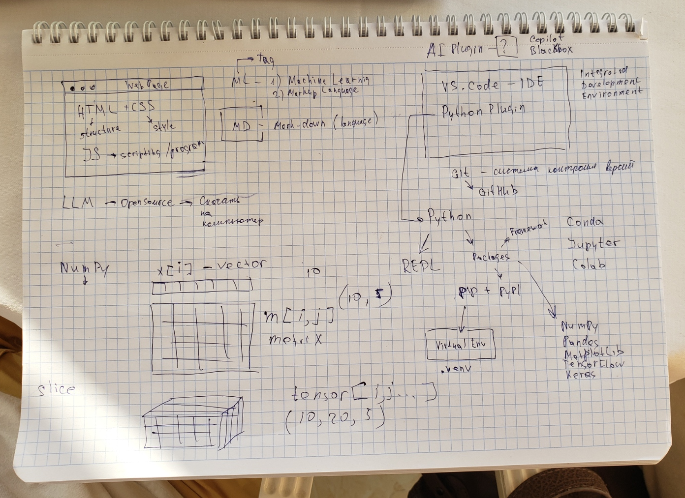

Terms:
| Tool/Concept | Description |
|---|---|
| VS Code | IDE for coding and debugging |
| Jupyter Lab | Interactive coding environment |
| Virtualenv | Python environment manager |
| Conda | Environment & package manager for Anaconda |
| Markdown (MD) | Lightweight documentation format |
v = [1, 2, 3]m = [[1, 2], [3, 4]]t[i, j, k] → multi-dimensional array
(10, 20, 3)array[0:5] or array[:, 1]Install VS Code: